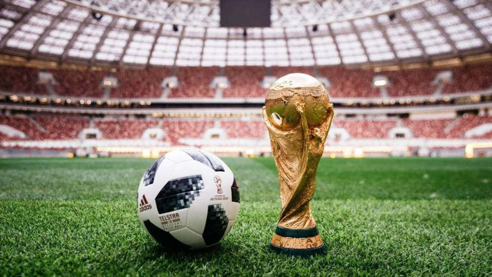

Rusia 2018
La Copa Mundial de la FIFA Rusia 2018 fue la vigésima primera edición de la Copa Mundial de Fútbol masculino organizada por la FIFA. Esta edición del evento se realizó del 14 de junio al 15 de julio de 2018 en Rusia, que consiguió los derechos de organización el 2 de diciembre de 2010.
Esta fue la undécima vez que la Copa del Mundo se disputó en el continente europeo, y la primera que se celebró en Europa Oriental. También por primera vez, el torneo tiene lugar en dos continentes: Europa y Asia, dada la ubicación de la ciudad de Ekaterimburgo, una de las sedes.
Con un costo estimado de más de 14 200 millones de dólares, es la Copa del Mundo más cara de la historia. Por otra parte, es la primera vez que se utilizó el Árbitro asistente de video (VAR) y un balón oficial con un chip incorporado para seguir los partidos en vivo mediante una aplicación en esta competencia.
El campeón fue Francia, que derrotó por 4-2 a Croacia —selección que llegaba por primera vez a la final— y se consagró por segunda vez después de 20 años (en 1998 ganó el Mundial en calidad de anfitrión ante Brasil).
Resumen de estos Torneos
| Mundial Corea-Japón 2002 | Mundial Alemania 2006 | Mundial Sudáfrica 2010 | Mundial Brazil 2014 | Mundial Rusia 2018 | ||
|---|---|---|---|---|---|---|
DATOS |
Sede | Corea-Japón | Alemania | Sudáfrica | Brazil | Rusia |
| Nombre Completo | Copa Mundial de la FIFA Corea del Sur/Japón 2002 (en coreano, japonés e inglés, respectivamente: 2002년 FIFA 월드컵, 2002 FIFAワールドカップ y 2002 FIFA World Cup) | Copa Mundial de la FIFA Alemania 2006 - FIFA Fußball-Weltmeisterschaft Deutschland | Copa Mundial de la FIFA Sudáfrica 2010 - FIFA Sokker-Wêreldbekertoernooi in 2010 | Copa Mundial de la FIFA Brasil 2014 - Copa do Mundo FIFA de 2014 | Copa Mundial de la FIFA Rusia 2018 - Чемпионат мира по футболу Россия 2018 | |
| Categoría | Absoluta | Absoluta | Absoluta | Absoluta | Absoluta | |
| Edición | XVII | XVIII | XIX | XX | XXI | |
| Organizador | FIFA | FIFA | FIFA | FIFA | FIFA | |
| Palmarés | Campeón | Brazil | Italia | España | Alemania | Francia |
| SúbCampeón | Alemania | Francia | Holanda | Argentina | Croacia | |
| Tercero | Turquía | Alemania | Alemania | Holanda | Bélgica | |
| Cuarto | Corea del Sur | Portugal | Uruguay | Brazil | Inglaterra | |
| Mejor Jugador | Oliver Kahn | Zinedine Zidane | Diego Forlán | Lionel Messi | Luka Modric | |
| Premio Yashin | Oliver Kahn | Gianluigi Buffon | Iker Casillas | Manuel Neuer | Tribaut Courtois | |
| Mejor Jugador Joven | Miroslav Klose | Lucas Podolski | Thomas Müller | Paul Pogba | Kylian Mbappé | |
| Premio al juego limpio | Corea del Sur | Brasil | EspañaEspaña | Colombia | España | |
Datos |
1. La cuna del Mundial de Futbol. El primer Mundial se llevó a cabo en 1930 en Uruguay. Para la fecha de inicio de la competencia, el estadio Centenario, el cual sería sede de la inauguración, no estaba listo. Fue concluido días después, y la primera vez que fue utilizado, el cemento de las gradas todavía estaba fresco. Si no nos crees, puedes viajar a Montevideo y visitar el estadio, en el que podrás ver con tus propios ojos los mensajes que los aficionados escribieron sobre el cemento. En la final de este Mundial, entre Argentina y Uruguay, los equipos no podían ponerse de acuerdo en cuanto al balón que utilizarían, por lo que se jugó el primer tiempo con un balón argentino y el segundo tiempo con uno uruguayo. ¿Quién fue el ganador? El equipo anfitrión. |
|||||